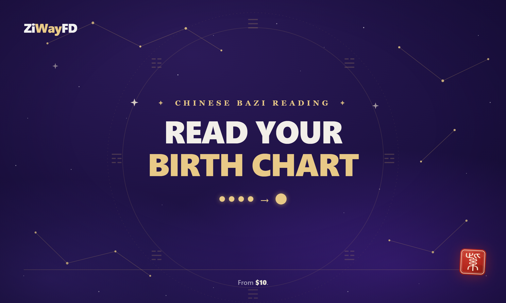
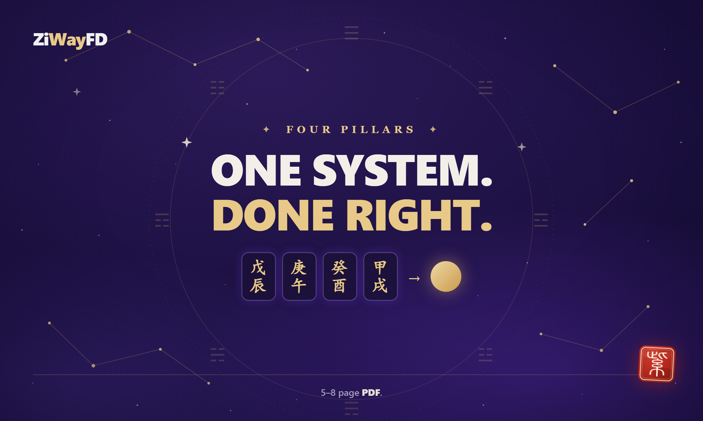
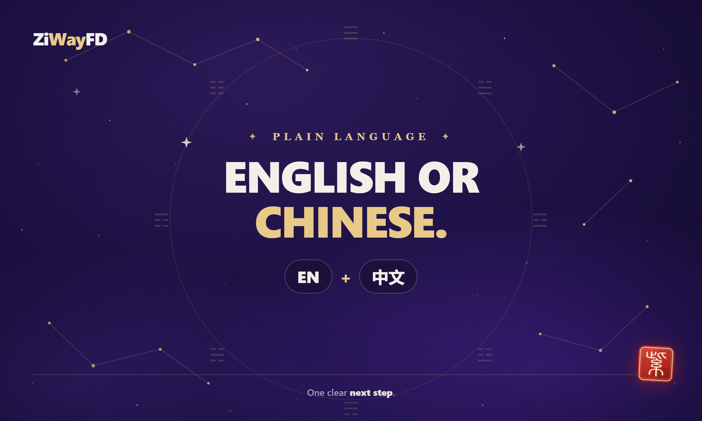

A precise Chinese BaZi (Four Pillars) reading from a Tsinghua-trained consultant. One system, done right — starting at $10.
You send your birth date, time and city. I return a written reading of your BaZi chart — the four pillars of year, month, day and hour — in plain language, with one clear next step.
Year, month, day and hour pillars calculated from your exact birth data — not a template.
What your day-master and element balance say about your natural tendencies and pressures.
The patterns that show up most clearly in your chart, explained without mysticism.
A single, actionable suggestion — not a vague forecast. Delivered in 2 days, 1 revision included.
ZiWay FD cross-verifies five independent systems — Western astrology, Chinese BaZi, Numerology, Human Design and blood type. Where they agree, that agreement is your signal. Where they differ, you get an honest caveat instead of a forced story.
The same calm, plain-language format your reading will use.



No. It is a cross-verified insight reading. I show where the systems agree or disagree; I do not claim to predict a fixed fate. Decision support, not fortune telling.
Your full birth date, exact birth time (as precise as you can), and birth city. Report language (English or 中文) — your choice.
Often, yes. BaZi reads best with a precise time, but many charts still make sense with an approximate one. Message me first and I'll tell you what's still readable before you order.
The $10 reading covers BaZi (Four Pillars) only — one system, done right. The $55–$195 reports add more systems and cross-verification. The $10 is the honest entry point; the upgrade is optional.
From $10 for BaZi, or the full five-system report. A written reading in English or 中文, delivered in 2 days.
Get your five-system report →